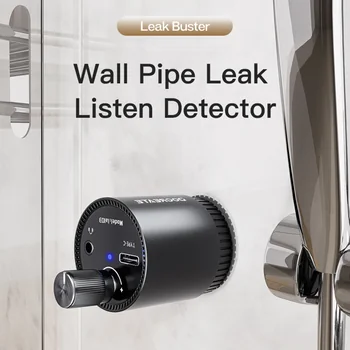

Efficiently Locate Water Leaks with a Multi-functional Detector
Water leaks, often hidden from plain sight, can lead to significant property damage, increased utility bills, and potential structural integrity issues if left undetected. Prompt and accurate identification of these leaks is crucial for effective maintenance and repair. Modern technology offers sophisticated tools to address this challenge, making the task simpler and more precise. This article explores a multi-functional water leak detector designed to offer reliability and precision in locating pipe leaks across various construction and plumbing environments.
Understanding the Importance of Early Leak Detection
The consequences of undetected water leaks can range from minor inconveniences to major structural damage. In residential settings, even a small, persistent drip can foster mold growth, damage flooring, walls, and foundations. In industrial or commercial environments, leaks in critical pipelines, such as fire protection systems or underground plumbing, can lead to substantial operational disruptions and safety hazards. An effective leak detection strategy is therefore not just about repair, but also about prevention and long-term asset protection.
Introducing the Multi-functional Pipe Leak Detector
This innovative device is engineered to simplify the complex task of finding hidden water leaks. Combining advanced sound detection technology with a user-friendly design, it offers a reliable solution for both professional technicians and property managers. It transforms the challenging process of identifying faint pipe vibrations into a clear, audible signal, guiding users directly to the source of the problem.
Key Features for Superior Leak Detection
The effectiveness of any leak detection tool hinges on its core features. This detector integrates several functionalities designed to maximize precision and convenience.
Ultra-Compact and Portable Design for On-the-Go Use
One of the standout attributes of this water leak detector is its exceptional portability. Its pocket-sized design ensures that it can be easily stored in any tool kit or carried effortlessly to various job sites. This ultra-compact form factor makes it an ideal device for technicians who need to perform leak checks on the go, allowing for quick deployment and minimal setup time without compromising performance.
Reliable Rechargeable Power for Extended Operation
Powering the device is a built-in 200mAh battery, providing a dependable energy source for up to 4 hours of continuous use. This ensures sufficient operating time for comprehensive inspections without frequent interruptions. Furthermore, the inclusion of a modern Type-C charging port offers convenient and fast recharging, allowing the detector to be ready for action whenever needed. This feature is crucial for maintaining workflow efficiency during prolonged detection tasks.
Pinpointing Leaks with 13000x Sound Amplification
The core of this detector's capability lies in its powerful 13000x sound amplification. Water leaks often manifest as subtle vibrations within pipe structures that are imperceptible to the unaided ear. This technology converts these faint leak vibrations into clear, distinct audio signals. By dramatically amplifying these sounds, the detector allows users to quickly and accurately locate the precise source of a leak, even in noisy environments or when leaks are minimal.
High-Sensitivity Detection with Adjustable Sound Output
Precision is paramount in leak detection. This device features high-sensitivity detection with an adjustable range of 0-60dB. This flexibility allows users to fine-tune the detector's sensitivity based on the specific conditions of the pipeline and the surrounding environment. The included headphones ensure clear and focused sound output, free from ambient noise, enabling users to concentrate on the crucial audio cues. The adjustable sound output further enhances the ability to differentiate between various sounds and pinpoint the leak accurately.
Wide Application Across Diverse Construction Pipe Systems
The versatility of this leak detector makes it an indispensable tool for a broad spectrum of applications. It is suitable for detecting leaks in:
- Bathroom Pipes: Identifying leaks behind walls or under flooring in residential and commercial bathrooms.
- Underfloor Heating Lines: Locating leaks in complex underfloor heating systems without needing to damage large sections of flooring.
- Fire Protection Pipelines: Ensuring the integrity of critical fire safety infrastructure.
- Underground Plumbing: Detecting leaks in buried pipes, which are often the most challenging to locate.
Durable Build for Reliable Performance in Varied Conditions
Constructed from robust ABS plastic and high-quality electronic components, this leak detector is built for durability and long-term reliability. Its resilient design ensures that it can withstand the rigors of various work environments. The device is engineered to operate effectively within a broad temperature range, from -10°C to 50°C, making it suitable for use in diverse climates and conditions, from indoor plumbing checks to outdoor construction sites.
Conclusion: A Smart Solution for Proactive Leak Management
The Multi-functional Water Leak Detector Sound Detector offers a comprehensive solution for identifying and addressing pipe leaks. Its combination of ultra-compact portability, long-lasting rechargeable power, powerful sound amplification, and adjustable high-sensitivity detection makes it a valuable asset. With its wide application suitability and durable construction, this device provides a reliable and efficient way to protect property from water damage and ensure the longevity of pipe systems. Investing in such a tool is a proactive step towards effective property maintenance and resource conservation.